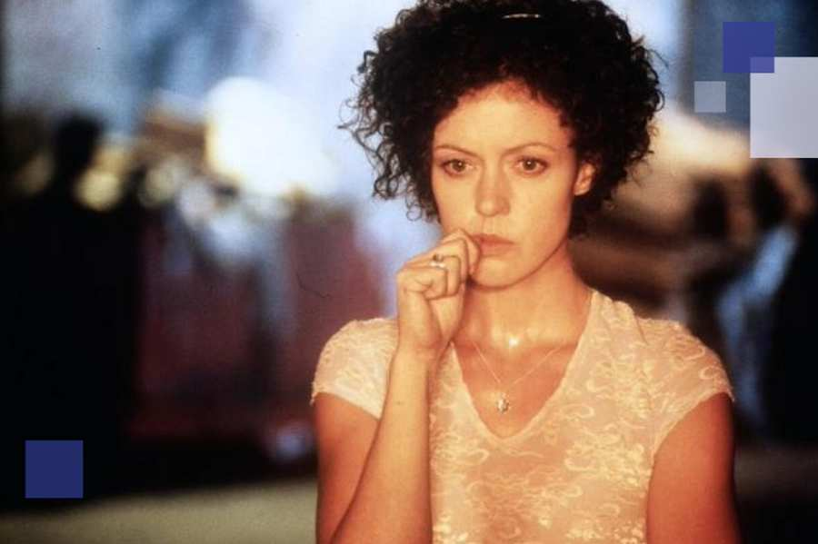

Event Details
Date & Time: 26.08.2026, 19:00
Location: ZIB in Baden, Grabengasse 14Add it to your calendar

Film meets dialogue "Meschugge"
Introduction and Q&A with Klaus Davidowicz
Top-class cinema with high tension from the 90s. A murder in New York's Jewish community brings David and Lena together. But how are the generations before them involved in this incident and why does the path lead back to the dark German history of the 1940s?
A murder is committed in New York's Jewish community. David (Dani Levy), the victim's son, sets out to find the murderer with a private detective. He meets Lena (Maria Schrader), who fascinates him and whose mother disappeared to Germany the day after the murder... Passionate love and the highest tension dominate this film. The characters' fates are inextricably intertwined; History continues unstoppably.
Klaus Davidowicz is a cultural scientist and professor of Jewish studies at the University of Vienna. His research focuses on modern Jewish cultural history, Kabbalah and Jewish film.
Registration is closed. Some places are still available. Please arrive half an hour before the event begins - we will allocate the free places on site.
Information about the event
Free entry, with registration
Access with photo ID
Filminfos
Director: Dani Levy
Year: 1998
Screenplay: Dani Levy
Duration: 100 minutes
Language: German (dubbed)
Actors: Maria Schrader, Dani Levy
Location
ZIB in Baden, Grabengasse 14, 2500 Baden
With the kind support of Lower Austria Culture and the cultural department of the city of Baden near Vienna.